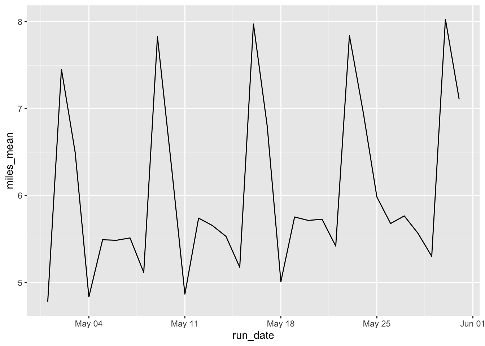

I do my long run on Saturdays. A couple of friends do theirs on Sundays. I thought with the number of people in the database, it wouldn’t be too hard to see what people use as their long run day. Conceptually it’s just figuring out what is the mean per day of the week and seeing which one is the longest day. There could be some issues with this approach but overall this should return what I’m looking for.
suppressPackageStartupMessages(library(tidyverse))
suppressPackageStartupMessages(library(lubridate))
gv <- read_csv("../datasets/GVRAT_May_Summary.csv")## Parsed with column specification:
## cols(
## .default = col_double(),
## Name = col_character()
## )## See spec(...) for full column specifications.glimpse(gv)## Rows: 19,537
## Columns: 35
## $ Bib <dbl> 17395, 11355, 1074, 743, 6211, 386, 7177, 3117, 4164, 6780, …
## $ Name <chr> "Gingerbread Man", "Matthew Jenkins", "Terri Biloski", "John…
## $ Miles <dbl> 1395.4, 1394.4, 1303.6, 1289.5, 1277.6, 1243.0, 1131.5, 1097…
## $ KM <dbl> 2245.7, 2244.1, 2098.0, 2075.3, 2056.1, 2000.4, 1821.0, 1765…
## $ `May 1` <dbl> 83, 32, 63, 34, 6, 35, 6, 50, 24, 21, 35, 40, 5, 62, 25, 31,…
## $ `May 2` <dbl> 43, 5, 59, 41, 21, 75, 0, 33, 24, 21, 16, 40, 89, 62, 12, 22…
## $ `May 3` <dbl> 49, 30, 52, 46, 35, 63, 2, 32, 24, 21, 14, 40, 47, 5, 9, 12,…
## $ `May 4` <dbl> 52, 37, 52, 54, 34, 43, 0, 24, 48, 21, 17, 30, 2, 62, 25, 24…
## $ `May 5` <dbl> 49, 38, 49, 60, 32, 10, 10, 25, 25, 22, 18, 41, 9, 63, 29, 1…
## $ `May 6` <dbl> 58, 39, 58, 62, 31, 83, 22, 24, 25, 22, 18, 30, 7, 63, 25, 2…
## $ `May 7` <dbl> 51, 41, 51, 60, 32, 65, 31, 51, 28, 22, 23, 23, 4, 64, 17, 1…
## $ `May 8` <dbl> 61, 43, 49, 55, 37, 28, 37, 25, 28, 22, 18, 40, 10, 63, 22, …
## $ `May 9` <dbl> 43, 30, 55, 49, 37, 68, 47, 48, 28, 22, 35, 51, 30, 0, 22, 2…
## $ `May 10` <dbl> 52, 40, 52, 59, 39, 68, 25, 30, 32, 22, 28, 20, 38, 32, 25, …
## $ `May 11` <dbl> 94, 45, 52, 59, 43, 48, 43, 26, 28, 34, 24, 44, 17, 31, 22, …
## $ `May 12` <dbl> 6, 47, 43, 56, 37, 54, 46, 26, 30, 37, 29, 40, 45, 33, 40, 2…
## $ `May 13` <dbl> 11, 44, 7, 16, 100, 8, 40, 26, 31, 38, 29, 41, 9, 35, 47, 31…
## $ `May 14` <dbl> 25, 47, 15, 25, 62, 22, 42, 22, 31, 34, 36, 30, 41, 31, 21, …
## $ `May 15` <dbl> 28, 46, 13, 28, 50, 26, 48, 52, 31, 34, 30, 43, 8, 33, 32, 3…
## $ `May 16` <dbl> 30, 48, 37, 30, 41, 11, 48, 36, 31, 58, 40, 41, 41, 0, 31, 2…
## $ `May 17` <dbl> 40, 46, 36, 40, 0, 6, 42, 45, 41, 28, 31, 40, 37, 32, 29, 21…
## $ `May 18` <dbl> 37, 44, 31, 37, 39, 68, 43, 35, 33, 34, 34, 0, 17, 0, 31, 33…
## $ `May 19` <dbl> 51, 46, 27, 51, 19, 42, 44, 28, 35, 33, 34, 0, 47, 62, 50, 2…
## $ `May 20` <dbl> 51, 41, 37, 51, 26, 42, 58, 15, 58, 34, 35, 27, 21, 0, 23, 3…
## $ `May 21` <dbl> 53, 44, 33, 53, 43, 22, 27, 25, 24, 39, 36, 25, 47, 0, 62, 2…
## $ `May 22` <dbl> 51, 46, 23, 51, 12, 12, 47, 27, 37, 35, 35, 21, 75, 32, 37, …
## $ `May 23` <dbl> 50, 42, 54, 50, 40, 6, 39, 33, 41, 0, 41, 21, 13, 0, 0, 34, …
## $ `May 24` <dbl> 50, 47, 23, 50, 47, 42, 39, 52, 11, 62, 21, 23, 13, 17, 28, …
## $ `May 25` <dbl> 60, 49, 36, 60, 100, 102, 30, 33, 36, 35, 30, 26, 14, 32, 28…
## $ `May 26` <dbl> 47, 48, 37, 47, 4, 6, 40, 29, 30, 35, 38, 30, 13, 19, 28, 33…
## $ `May 27` <dbl> 49, 47, 37, 49, 17, 6, 39, 28, 32, 35, 24, 35, 13, 0, 43, 32…
## $ `May 28` <dbl> 0, 51, 37, 0, 37, 4, 37, 31, 32, 35, 37, 43, 15, 32, 31, 24,…
## $ `May 29` <dbl> 0, 53, 42, 0, 37, 12, 37, 27, 32, 35, 32, 31, 19, 0, 31, 36,…
## $ `May 30` <dbl> 0, 55, 63, 0, 39, 28, 37, 38, 50, 35, 44, 42, 24, 32, 27, 36…
## $ `May 31` <dbl> 11, 0, 45, 11, 22, 22, 42, 32, 50, 37, 37, 42, 17, 19, 25, 2…One way to look at this is to see the mean distance run by day.
gv_miles <- gv %>%
select(-c(Name, Miles, KM)) %>%
pivot_longer(starts_with("May"), names_to = "run_date",
values_to = "miles_day") %>%
mutate(run_date = mdy(paste0(run_date, ", 2020")))gv_miles %>%
group_by(run_date) %>%
summarize(miles_mean = mean(miles_day)) %>%
ggplot(aes(x = run_date, y = miles_mean)) +
geom_line()
There’s definitely a peak on Saturdays such as May 2, May 9, etc.
Here’s the mean for each day of the week:
gv_miles %>% group_by(run_date) %>%
mutate(dayofweek = weekdays(run_date)) %>%
group_by(dayofweek) %>%
summarize(mean_miles = mean(miles_day)) %>%
arrange(-mean_miles)## # A tibble: 7 x 2
## dayofweek mean_miles
## <chr> <dbl>
## 1 Saturday 7.82
## 2 Sunday 6.75
## 3 Tuesday 5.67
## 4 Wednesday 5.65
## 5 Thursday 5.58
## 6 Monday 5.17
## 7 Friday 5.16Conclusion
Runners put in the most mileage on Saturdays in the GVRAT.